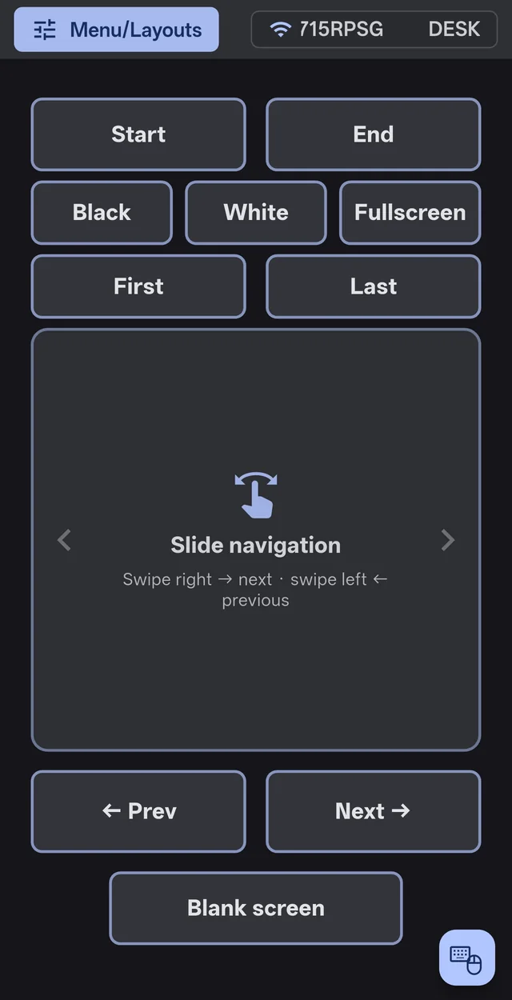

HP kamu adalah kontrolernya.
Gamepad, keyboard dan mouse, remote TV, dan remote slide untuk PC, Mac, TV, atau tablet kamu.
Gratis. Lewat Bluetooth, tidak perlu instal apa pun di perangkat lain.

Sambungkan sesukamu
Bluetooth
Tanpa instalasiPasangkan sekali dari pengaturan Bluetooth di PC, Mac, TV, atau tablet. HP terdeteksi sebagai gamepad, keyboard, dan mouse sungguhan.
Panduan pengaturan BluetoothWi‑Fi dengan Companion
Windows, opsionalLatensi terendah, menemukan PC kamu sendiri, dan bisa dipakai main hingga 16 HP sekaligus.
Muncul peringatan dari browser atau SmartScreen?
Companion masih baru, jadi Windows dan browser kamu belum mengenalinya. Ini wajar untuk software baru.
- Browser bilang file ini jarang diunduh: buka daftar unduhan (Ctrl + J), buka menu file tersebut dan pilih Simpan, lalu pilih Tetap simpan jika diminta.
- "Windows melindungi PC Anda": klik Info selengkapnya, lalu Tetap jalankan.
- Setujui permintaan Kontrol Akun Pengguna agar penginstal bisa menambahkan driver ViGEmBus.
Penginstal hanya menambahkan driver open source ViGEmBus jika belum ada, agar game mengenali HP kamu sebagai kontroler Xbox. Untuk Wi‑Fi, izinkan Companion di jaringan pribadi pada Windows Firewall.
Kontroler sungguhan, di HP kamu
Stik, trigger, bumper, dan D-pad. Game mengenalinya sebagai kontroler sungguhan, jadi langsung jalan.


- Stik melayangMuncul di mana pun jempolmu menyentuh layar.
- Klik stikKetuk dua kali stik untuk menekannya.
- Main barengHingga 16 HP di satu PC Windows, masing-masing jadi kontroler sendiri.
Lebih dari sekadar gamepad
Ganti tata letak dari menu. Aplikasi yang sama, sambungan yang sama.
-

MouseTouchpad, klik, gulir, dan pintasan. -

KeyboardSemua tombol, termasuk tombol F dan pintasan. -

Remote TVVolume, pemutaran, dan panah untuk aplikasi TV apa pun. -

Remote slidePowerPoint, Google Slides, atau Canva.
Ada juga di aplikasi

- Gratis diunduhDi Google Play.
- Tanpa akunBuka dan langsung main.
- Tetap di jaringanmuInput langsung dari HP ke perangkatmu.

Ambil HP-mu. Tekan main.
Gratis untuk Android. Companion untuk Windows bersifat opsional.